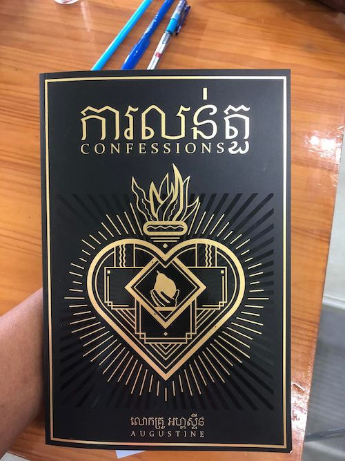
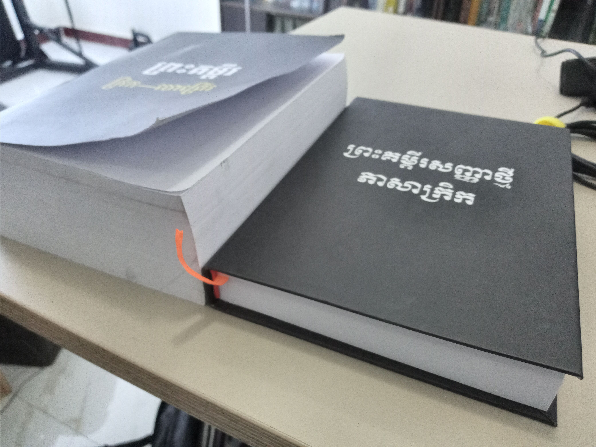
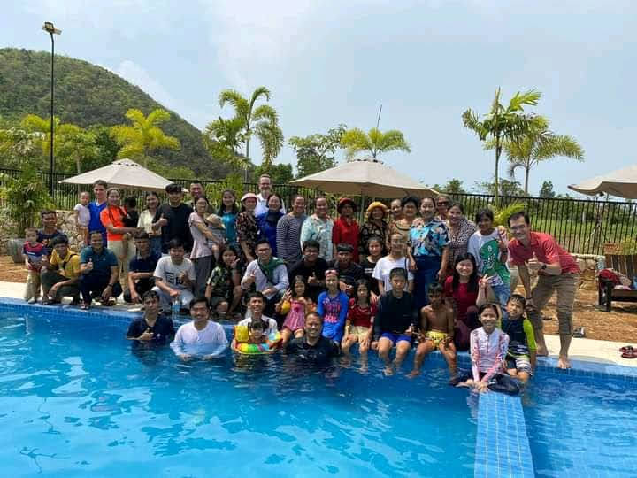
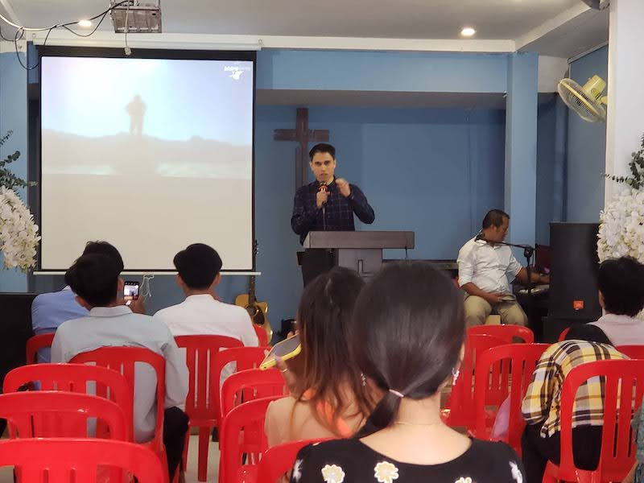
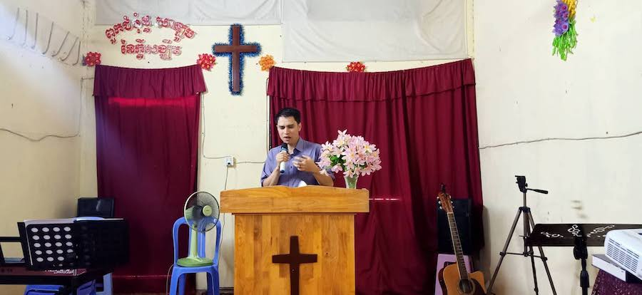
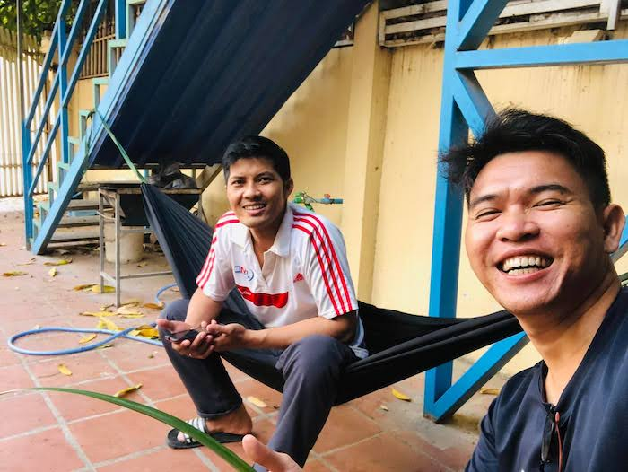
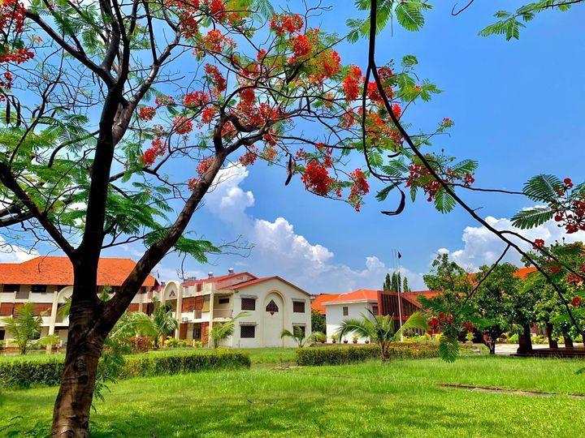
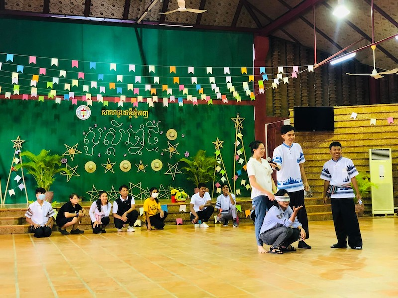
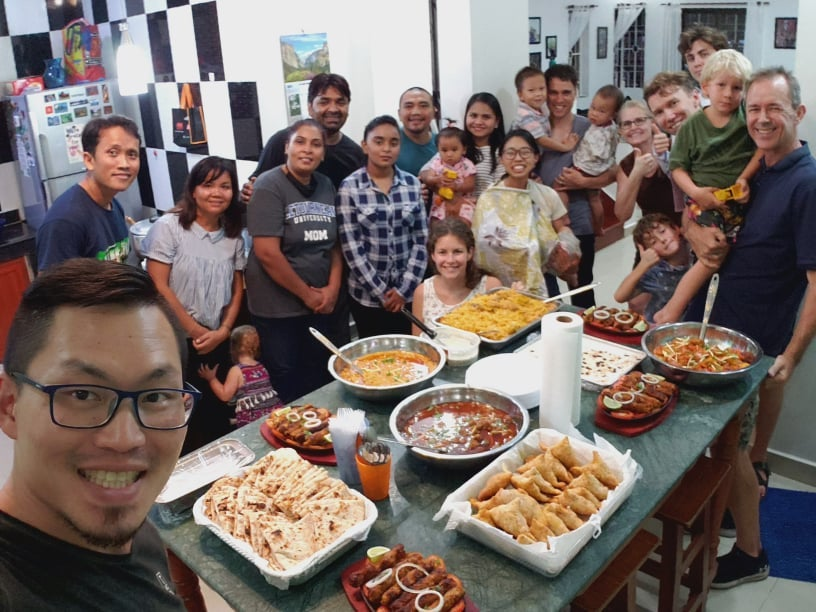
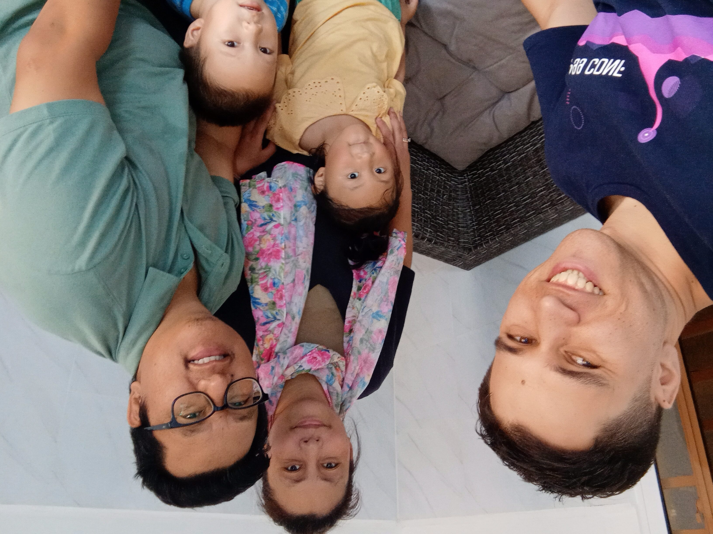

July 2022
Dear Brothers and Sisters in Christ,
 Confessions by Augustine in Khmer It is fair to say, the last several months have been full - in every sense of the word! We’ll do our best to summarize some of the highlights, but overall, is enough to say that we have a lot to be grateful for and are encouraged about what God is doing here in Cambodia.
ACTION Translation Team
As always, the Action translation team has been hard at work. They were recently able to hire another staff member, a former Phnom Penh Bible School graduate, who will only further their goal of providing biblical resources for the church in Cambodia.
In last several months, there have been many exciting new publications, including (but not limited to) Augustine’s Confessions. They also reprinted some of their older works, a testament to the continuing impact that these books are having in the Church in Cambodia.
They are also prayerfully considering trying to put together a conference for the purpose of being able to encourage like-minded, biblical churches. Especially when in a Buddhist country, that is only recently opening up to the gospel, often pastors and church members can feel alone in the work that they are doing. This can be further exaggerated by the temptation to compare the “results” they see day-in day-out with the apparent success of prosperity gospel preachers and churches, which are becoming more and more prominent in Cambodia. Plans are not definite but please pray for wisdom in this regard, either for moving forward or for waiting for a different time and opportunity, and that regardless for the continued faithfulness of pastors around the country who seek to hold fast to the Truth of Christ.
Again, just so there’s no confusion, we are not personally involved in this work, but just sharing what’s going on with the team as a whole.
Greek and Hebrew Bibles and Resources
The translation team also helped with a project that I’m particularly excited about. Knowing their experience in printing and publishing here in Cambodia, I begged for their help in printing Greek and Hebrew Bibles. There are a decent number of pastors who have studied overseas, or studied in Bible school, but without any access to a Greek and Hebrew Bible they can use. Cost is of course a major factor in this.
Thankfully, we were able to take advantage of the Greek and Hebrew bible available that was put together by Dr. Chou (one of my former professors from Masters) and help facilitate those who are interested to print their own copy at a local print store for a fraction of the price.

Growing Interest in the Biblical Languages
Perhaps the most encouraging part of all this is seeing how God is stirring up in His church here a growing interest in the original languages. Even just a couple years ago, the line we consistently heard was that Cambodia is not ready for biblical languages, that they still need the basics first, and that no one would be interested.
Needless to say, it has been encouraging to see pastors we are in contact with as well as students at the Bible school become more and more desirous to be able to study the Scriptures in the original languages. Several students (both current students and graduates) have already bit the bullet and acquired their own Greek New Testaments. There was even a pastor that I didn’t know (actually I still don’t know) who visited the ACTION translation office one day, saw the Greek NT we printed on the desk, and wanted one right away. On top of that, five of the students at the Bible school asked last week to study once a week during their vacation to get started learning Greek, so they can get more out of the class that is offered in the Fall semester.
We haven’t worked out the details yet, and to be fair, it’s still too early to know where this will go. (In that sense, this is both a prayer request and a praise). But from what I’ve seen in class at least, these students in particular do seem have a genuine interest in knowing the Scriptures more deeply.
Additionally, we would be the first to acknowledge that Greek and Hebrew are not an end in itself - but when it comes from a heart that desires to know Christ through His Word more deeply and has as its end precision in exegesis and richness in personal devotion, it is hard not to get excited.
Of course, we know that this is not a development that happened overnight, and it is not a development that came about from our doing - we’re just the grateful harvesters who get to reap the benefit of the years and tears of those before us. The harvest is plentiful!
We are working on putting together other Greek and Hebrew resources as well. As it turns out, learning a new language is quite challenging when you don’t even have a rudimentary dictionary. We are thinking to probably start focusing on Greek, and work more on Hebrew later as time allows. So far we have a Greek to Khmer vocab list (don’t yet dare call it even a “concise” lexicon!). Praise God for translators who not only created the translation itself, but put in the work to map their translation to the Greek text, and then despite all the effort that goes into that, do not cling to the rights but share openly.
Church
In April, right before Khmer new year, our church had a baptism/camping retreat. The highlight was of course the testimonies and the baptism itself, but it was also a great opportunity to spend time with members of our church on the drive to and from the retreat site.

I can’t say we got much sleep that night in the tent…but we knew that when we signed up!
There I’ve also been some preaching opportunities, both at our own church, as well as a sister church.  
The pastor at our sister church is currently preaching through the Psalms, one by one, and invited Ryan to preach for his church on the resurrection from Psalm 16. The pastor is one of the 4-5 men who have been meeting weekly to discuss the sermons of the previous week as well as in discussing exegetical issues and applications for the upcoming sermon.
This group came about from the idea of our pastor, who got us started doing this earlier this year. When he asked me if I wanted to join in, feeling slammed for time as is with church and school opportunities, well let’s just say, it was not easy to say yes,…but it was impossible to say no! What a great opportunity to be a part of a group of pastors and elders who want to improve their preaching and go deeper in the Scriptures. On top of everything else, for those who have spent time in this part of the world, you know well how countercultural it is to open oneself up to constructive criticism. It’s honestly just a lot of fun to open the Word with these men, explore the different passages that they’re going through in their churches, and gain from their insights and experience.

Another Prayer request:
- Please also pray for one of our neighbors, who came to church last Sunday. We met him only once, but after just that one brief interaction, he brought his whole family to church the next Sunday! We were quite pleasantly surprised that he was there. He seems very excited and was asking about different mid-week activities the church has as well. Pray that faith would take root and blossom in him and his family.
PPBS
 PPBS At the Phnom Penh Bible School, the spring semester is winding to a close this week, with finals next week. This semester, Ryan has been teaching Hebrews like he did last year, as well as Romans. It is now the close of my third semester here, and it has been great to see the students grow from semester to semester.
One issue that seems to have come up lately, actually both within the church and at the Bible school, is the question of ecumenicalism. In the case of the Bible school, it seems to have been spurred on by an event that was held to allow professors and students from different Bible schools to meet and fellowship with each other. Given the nature of the event, with schools represented of different denominations and backgrounds, it seems to have gotten the students thinking more and more about what it means to work together with other congregations.
 Khmer New Year Celebration in April 2022 In the Hebrews class, the questions started coming up after discussing brotherly love in Hebrews 13:1. In the Romans class just the other day, it came up when discussing Romans 14, about Christian Freedom. The question was asked about how we as Christians should live with others who have different beliefs, particularly about the charismatic gifts. Though the topic is not directly tied to issues of conscience, we were able to discuss what it means to disagree with other Christians, while holding in tension the priority of unity in the Church, love for others, the Lordship of Christ, and the importance of the Truth.
This issue seems to be something that will likely continue to be more and more of an issue as time goes on here in the church in Cambodia. Please pray for wisdom and charity for all involved.
ACTION Teammates
 Saying goodbye to our good friends/teammates One update regarding our ACTION teammates: due to persistent health issues, one of the families on our team has had to return home back to Canada. This isn’t an emergency, but it is enough of an issue that it could have become that if they did not act quickly enough. Moreover, the nature of the health issue interfered with their ability to minister effectively without debilitating consequences.
It was hard to see them go, but we are glad for the fact that they’re able to get help, and the health condition seems to be improving a bit (although very gradually) that they’re back home.
 Saying hello to our good friends/teammates On a more positive note: our teammates from Nagaland India returned back to Cambodia after their extended furlough. Given COVID and various other circumstances, this was not an easy feat, but for God all things are possible! Jonathan and Samuel in particular are glad to have a new friend and so are we.
A personal note
Regarding us ourselves: well, what to say haha. It is easy to write an update like this and not write about anything terribly personal, either unintentionally or otherwise. Or if it’s personal, not writing about that which is most difficult or challenging, sometimes even if these are things which are most on our hearts in a given season.
These updates were never intended to be yet another form of “social media”, where we share the highlight reel of what’s happening in our lives and post some pictures to go along. As is true when we first began these updates (over six years ago now), we want to do what we can to express and facilitate the partnership that you have with us in the work that we’re doing here in Cambodia. We are not here alone, and we cannot and should not go alone - we need and covet your prayers. Moreover, we function as the representatives of your love for the Church abroad and your heart to see those from every tribe, tongue and nation praising Christ on that final day.
This being the case, our desire is to be specific in our prayer requests and share what is happening here on the ground as we see it - recognizing that what we do here is not “my” work but ours.
That said, as time goes on, it seems more and more that difficult to be transparent in a forum like these updates. On the one hand, these updates are specifically for only those who are praying for us and supporting us - “holding the ropes” as it were. On the other hand, especially as we get more and more deeply involved in the life of the church (both our own local church and the greater Christian community), there is more and more that weighs on our hearts, but is not ours to share. Anyone who has been deeply involved in the life of the Church for any substantial length of time knows that with all of the joy and all that there is to celebrate, mixed into that is all of the tragedy and pain. It is as if we are constantly living in Ezra 3, where the joy is so mixed into the mourning that it can be hard to distinguish between the two. Such is life in this “already but not yet” time where we know that in Christ, “it is finished”, even having received the first fruits of His Spirit, but are still waiting for His return.
All that to say: Thank you also for understanding, when we share what we can and leave the rest unsaid. Thank you to those who reach out, asking us how we’re doing so we can share on a more personal level, and receive your more specific encouragement and prayers. And finally, thank you to those who - even without us asking or knowing - consistently, faithfully, bring us before the throne of grace with your intercession on our behalf, even when you don’t know the specifics but do know what it means to be on the frontline of Christian ministry (as are all who desire to live a godly life in Christ Jesus). The Lord hears your prayers, and we experience the benefit, even when we are slow to acknowledge or fail to be sufficiently grateful.
For His glory,
Ryan and Rebekah